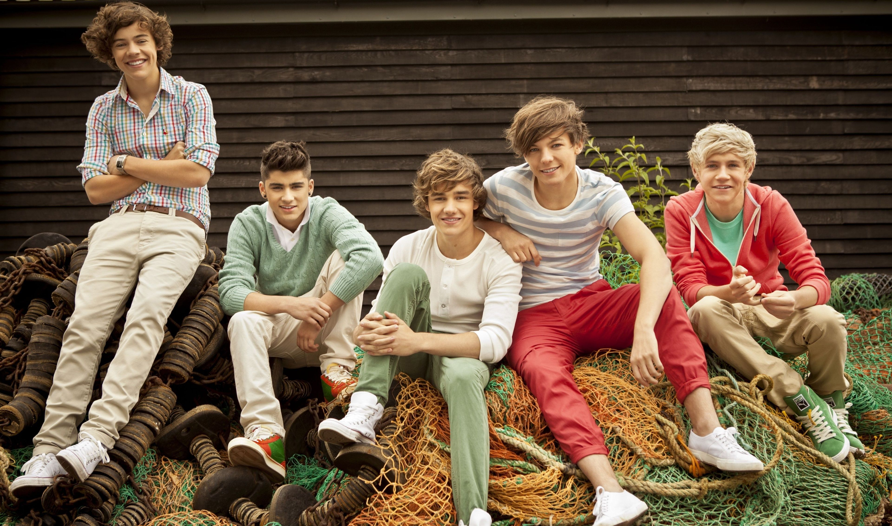

Harry Edward Styles (born 1 February 1994) is an English singer, songwriter, and actor. His musical career began in 2010 as a solo contestant on the British music competition series The X Factor. Following his elimination early on, he was brought back to join the boy band One Direction, which went on to become one of the best-selling boy bands of all time.
Styles released his self-titled debut solo album through Columbia Records in 2017. It debuted at number one in the UK and the US, and became one of the world's top-ten best-selling albums of the year. Its lead single, "Sign of the Times", topped the UK Singles Chart. He made his acting debut in Christopher Nolan's 2017 war film Dunkirk. Styles' second album, Fine Line (2019), debuted atop the US Billboard 200 with the biggest first-week sales by an English male artist in history, and was listed among Rolling Stone's "500 Greatest Albums of All Time" in 2020. Its fourth single, "Watermelon Sugar", topped the US Billboard Hot 100.
Throughout his career, Styles has earned several accolades, including a Brit Award, a Grammy Award, and an American Music Award. Aside from music, he is also known for his flamboyant fashion, and is the first man to appear solo on the cover of Vogue magazine.
Harry Edward Styles was born on 1 February 1994 in Redditch, Worcestershire, the son of Anne Twist (née Selley, formerly Cox) and finance worker Desmond "Des" Styles. When he was a child, he moved with his parents and older sister, Gemma, to Holmes Chapel, Cheshire. His parents divorced when he was seven and his mother later was remarried to Robin Twist, who died of cancer in 2017. Styles has an older stepbrother named Mike and a stepsister named Amy, children of Twist. Styles said he had a "great childhood" and was always supported by his parents. As a child, he recorded covers on a karaoke machine he was given by his grandfather, and the first song he recorded was Elvis Presley's "The Girl of My Best Friend". Styles attended Holmes Chapel Comprehensive School. While at Holmes Chapel Comprehensive, he was the lead singer for the band White Eskimo, which won a local Battle of the Bands competition. At the age of 16, he worked part-time at the W. Mandeville Bakery in Holmes Chapel.
Following a suggestion from his mother, on 11 April 2010, Styles auditioned as a solo contestant for the seventh series of the British televised singing competition The X Factor, singing a rendition of Stevie Wonder's "Isn't She Lovely". He advanced to bootcamp, but failed to progress further. Four others in his age group also failed, but they were put together as an ensemble in July 2010, during the bootcamp stage of the competition, thus qualifying for the "Groups" category mentored by Simon Cowell. The group consisting of Styles, Niall Horan, Liam Payne, Louis Tomlinson, and Zayn Malik, got together for two weeks to practise. Styles said he had suggested the name One Direction to his bandmates and they agreed to keep it. They began to gain considerable popularity in the UK, and within the first four weeks of the live shows, they were Cowell's last act in the competition. The group eventually reached The X Factor final, and finished in third place.
In January 2011, One Direction signed a recording contract with Cowell's label Syco Records. Their UK number one debut single, "What Makes You Beautiful", and their debut studio album, Up All Night, followed later that year. The album contained three songs co-written by Styles, and made One Direction the first British group to have their debut album reach number one in the United States. Their four succeeding studio albums, Take Me Home (2012), Midnight Memories (2013), Four (2014) and Made in the A.M. (2015), all debuted at number one in the UK. Midnight Memories was the world's best-selling album of 2013, and its accompanying Where We Are Tour was the highest-grossing tour of 2014 and remains the highest-grossing tour of all time by a vocal group. After the release of Four, One Direction became the only group in the 58-year history of the Billboard 200 albums chart to have their first four albums debut at number one. The albums spawned a string of successful singles, including "Live While We're Young", "Little Things", "Best Song Ever", "Story of My Life", "Drag Me Down" and "History".

Not wanting to "exhaust" the fan base, upon Styles' suggestion the band went on an indefinite hiatus in 2016 after completing promotional activities related to Made in the A.M.. Over the course of their career, One Direction have sold 70 million records worldwide, including 7.6 million albums and 26 million singles in the US, becoming one of the best-selling boy bands of all time. The group amassed numerous accolades, including seven Brit Awards, seven American Music Awards, six Billboard Music Awards, and four MTV Video Music Awards.
While in the band, Styles co-wrote the song "Just a Little Bit of Your Heart" for Ariana Grande's album, My Everything (2014).
As a solo artist, Styles joined Jeffrey Azoff's Full Stop Management as well as talent agency CAA, and signed a recording contract with Columbia Records in the first half of 2016. Around this time, he also launched his own record label, Erskine Records. Recording for Styles' debut album took place throughout 2016 in Los Angeles, London, and Port Antonio, Jamaica, where Styles and his collaborators had a two-month writing retreat in the autumn. In March 2017, he announced that his first solo single, "Sign of the Times", would be released on 7 April. The song went on to peak at number one on the UK Singles Chart and at number four on the Billboard Hot 100. It is a glam rock-influenced soft rock power ballad, and has drawn comparisons with the work of David Bowie. Rolling Stone ranked it as the best song of 2017. Its music video featured Styles flying and walking on water, and won the Brit Award for British Video of the Year. In April, Styles was a musical guest on Saturday Night Live in the US, and made his debut televised solo performance in his native country on The Graham Norton Show.
His self-titled debut album was released in May 2017, whereupon it debuted at number one in several countries, including Australia, the UK and the US. The record was influenced by 1970s soft rock and was described by Variety as a "classic cocktail of psychedelia, Britpop, and balladry". The album received generally favourable reviews from critics, and was included in several publications' lists of the best albums of 2017. Harry Styles yielded two more singles, "Two Ghosts" and "Kiwi". The film, Harry Styles: Behind the Album, which documented the writing and recording process for the album, was also released in May exclusively on Apple Music.[65] Styles embarked on his first headlining concert tour, Harry Styles: Live on Tour, from September 2017 through to July 2018, performing in North and South Americas, Europe, Asia, and Australia. The tour setlist included covers of Fleetwood Mac's "The Chain", several One Direction songs, as well as previously unreleased material.
Styles made his feature film debut in Christopher Nolan's war film Dunkirk, in July 2017, playing a British soldier named Alex who is a part of the Dunkirk evacuation in World War II. He appeared alongside an ensemble cast which included Fionn Whitehead, Tom Glynn-Carney, Jack Lowden, Kenneth Branagh, Cillian Murphy, Mark Rylance, and Tom Hardy. Styles won the part over "thousands of young men"; Nolan later admitted he was unaware of the extent of his fame and that Styles was cast "because he fit the part wonderfully and truly earned a seat at the table." The Daily Telegraph film critic, Robbie Collin, praised Styles for his "bright, convicted, and unexpectedly not-at-all-jarring performance".
In November 2017, BBC One broadcast Harry Styles at the BBC, a one-hour television special presented by Nick Grimshaw. At 2017 ARIA Music Awards, Styles received an award for Best International Artist. He guest hosted The Late Late Show with James Corden in December. Together with Jack Antonoff and Ilsey Juber, Styles co-wrote "Alfie's Song (Not So Typical Love Song)", performed by the band Bleachers, for the soundtrack of the film Love, Simon (2018). He also served as an executive producer on the CBS sitcom Happy Together, which premiered in October 2018 and was inspired by his time living with television producer Ben Winston. In 2018, Styles began modelling for the Italian fashion house Gucci, appearing in several campaigns for the brand.
"Lights Up", the lead single from Styles' second album Fine Line, was released in October 2019, debuting in third place in the UK. The song features a "soft-touch re-entry into the pop slipstream" according to music writer Jon Caramanica. Styles performed "double duty" as host and musical guest on Saturday Night Live in November. The second single preceding Fine Line, "Adore You", was released in December, peaking at number seven in the UK and at number six in the US. Styles also once again guest hosted The Late Late Show with James Corden that month.
Fine Line followed on 13 December. The album was recorded at the Shangri-La studio in Malibu, California with the same production team behind Styles' debut album, and features a similar sound sonically to Harry Styles, while incorporating additional elements of funk and soul. It received generally positive reviews from critics. The album debuted at number three in the UK, and topped the US charts, breaking the record as the biggest sales debut from an English male artist in the US since Nielsen SoundScan tracking began in 1991. Singer-songwriter Stevie Nicks, who referred to Styles as "the son [she] never had", likened Fine Line to Fleetwood Mac's album Rumours and commented that it inspired her to write new music. Rolling Stone ranked it at number 491 in their 2020 list of the "500 Greatest Albums of All Time". Four other singles, "Falling", Watermelon Sugar", "Golden" and "Treat People with Kindness", were released from the album. "Watermelon Sugar" became Styles' fourth UK top-ten single, charting at number four, as well as his first number-one single in the US. A tour to support Fine Line, entitled Love On Tour, was set to take place throughout 2020. Styles has postponed the European and North American legs of the tour until 2021 due to the COVID-19 pandemic.
At the 2020 Brit Awards, Styles was nominated for British Male Solo Artist and British Album of the Year. In March 2020, he performed an NPR Tiny Desk concert, and in July, he narrated a bedtime story titled Dream with Me for the relaxation app Calm. Later that year, Styles received the Favorite Pop/Rock Album for Fine Line at the 48th American Music Awards, the Best International Artist at the 34th ARIA Music Awards, and the Chart Achievement at the 27th Billboard Music Awards. He was also named Variety's Hitmaker of the Year. At the 63rd Annual Grammy Awards, he received three nominations for Best Pop Vocal Album (Fine Line), Best Pop Solo Performance ("Watermelon Sugar") and Best Music Video ("Adore You"), winning Best Pop Solo Performance.
Styles will become the leading actor in the upcoming psychological thriller film Don't Worry Darling, directed by Olivia Wilde; he is replacing Shia LaBeouf, who had departed the film, as Jack. He is also set to star alongside Emma Corrin in Amazon Studios' adaptation of the 2012 novel My Policeman, directed by Michael Grandage.